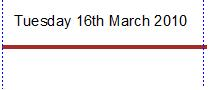
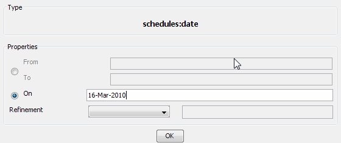
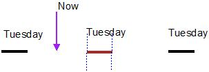
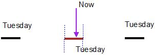
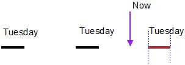
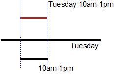
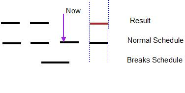

Flexitime.
Oddjob Schedules provide a very flexible way of defining the schedule for running a job. Oddjob Schedules work with intervals of time. Here's an interval:
In Oddjob this would be defined with the following XML:
{@oddjob.xml.file examples/userguide/schedules1.xml}Or defined in Oddjob Designer it would look like this:
This interval spans the whole of that Tuesday, that was the 16th of March 2010, from midnight until 1 millisecond before midnight that night.
More commonly an interval is not specified between fixed points in time. This schedule returns the interval that is the next day of the week that is a Tuesday.
{@oddjob.xml.file examples/userguide/schedules2.xml}The Tuesday selected depends on the time now.
On Tuesday the interval is for all of that Tuesday.
And from 00:00 Wednesday the interval is for the following Tuesday.
The dayofweek schedule allows an interval to be defined from the start of one day of the week to the end of another day of the week. This has exactly the same effect as the above:
{@oddjob.xml.file examples/userguide/schedules2a.xml}Note that this is an interval of 1 day, not 7 days. If the 'on' attribute is given, from and to are ignored.
Regular schedules that are specified with a 'from' and a 'to' are are called Constrained Schedules. They are:
With all Constrained Schedules, if the 'from' is after the 'to', then the specified interval is in the next unit of time. For instance:
{@oddjob.xml.file examples/userguide/schedules3.xml}Specifies an interval from this 1st of October to the end of April next year (Or from last October if now is before April this year).
Many schedules allow a refinement schedule to be specified. This is another schedule that 'refines' the interval of its parent.
 {@oddjob.xml.file examples/userguide/schedules4.xml}This would schedule a job at 10am every Tuesday. In this instance the
time
schedule has refined the dayofweek schedule. The day of week
schedule has also 'limited' the time schedule. It no longer returns an
interval that is every day from 10am to 1pm. The time now only applies
to Tuesdays. This limiting effect applies to the beginning of the interval,
not the end.
Thus the interval is still applicable even if the time is 00:59am Wednesday morning. At 1:00am precisely the interval moves on to the following week.
The interval schedule provides regular fixed length intervals.
{@oddjob.xml.file examples/userguide/schedules6.xml}The schedule provides back to back intervals that are five seconds long. It would be used to schedule something every five seconds.
{@oddjob.xml.file examples/userguide/schedules7.xml}This will provide thirty minute intervals from 10pm Tuesday night until 1:30am Wednesday morning. Intervals are calculated form the parents limits and so would be on the hour and half our. The final interval runs until 1:30am even though it's parent finishes at 01:05. This is because, like the Constrained Schedules the limiting affect of the parent only applies to the beginning of the interval.
The list schedule provides for even greater flexibility.
{@oddjob.xml.file examples/userguide/schedules8.xml}This would schedule a job at 8am every Monday, then at 9am and 3pm every other day.
When a schedule is evaluated each schedule in the list is evaluated and the first due schedule is used as the next due date.
The list of sub schedules can be quite unrelated.
{@oddjob.xml.file examples/userguide/schedules9.xml}We already saw in scheduling how broken schedules can be used to define holidays but here's a little more on how they work.
The intervals defined by the breaks mask those defined by the regular schedule. As with other schedules, the break only masks a interval where its start is in the break interval.
Last days of the month can achieved easily using the <dayofmonth on="0"> schedule. The last working day of the month is a bit harder, but can be achieved using the last schedule. The last schedule takes the last result of its refinement, so it calculates the month end by moving through all the days before the month end and seeing if it's a working day or not.
Here's an example that will run the job at 10pm on the last working day of every month.
{@oddjob.xml.file examples/userguide/schedules10.xml}